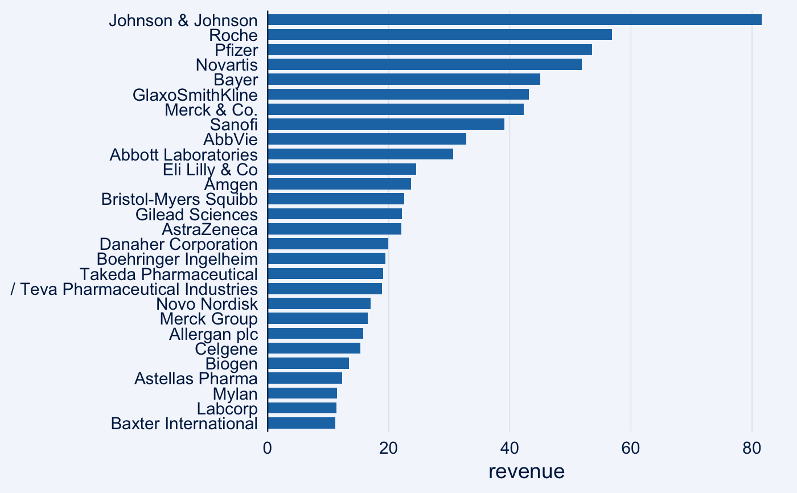
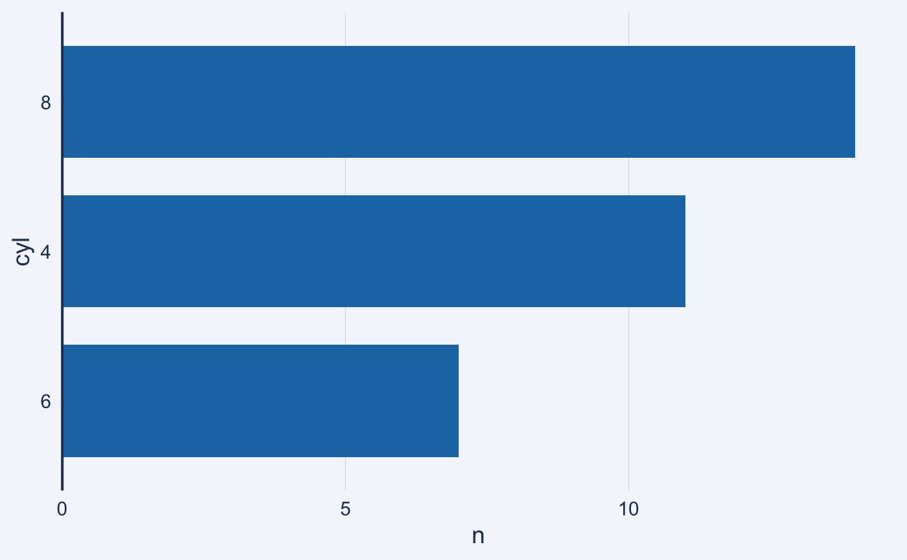
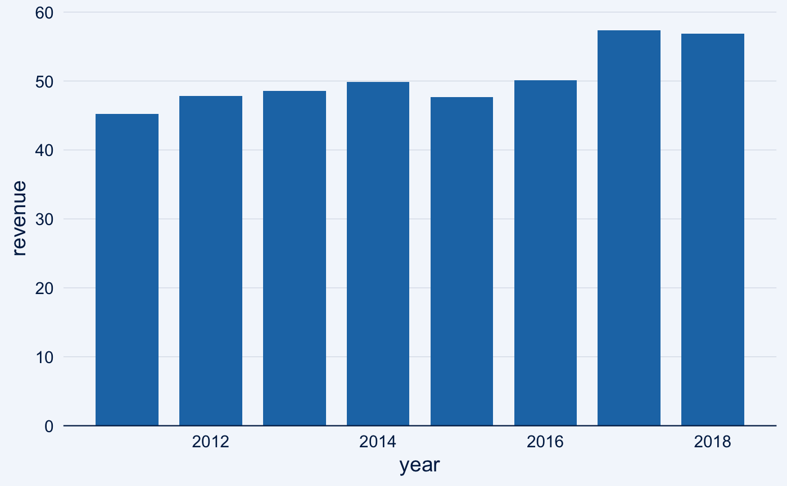
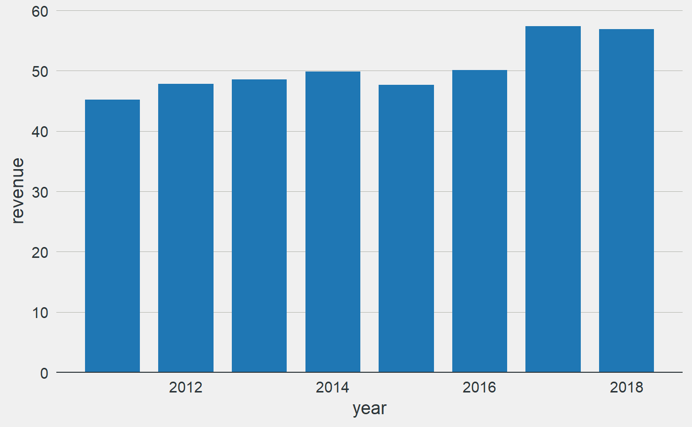
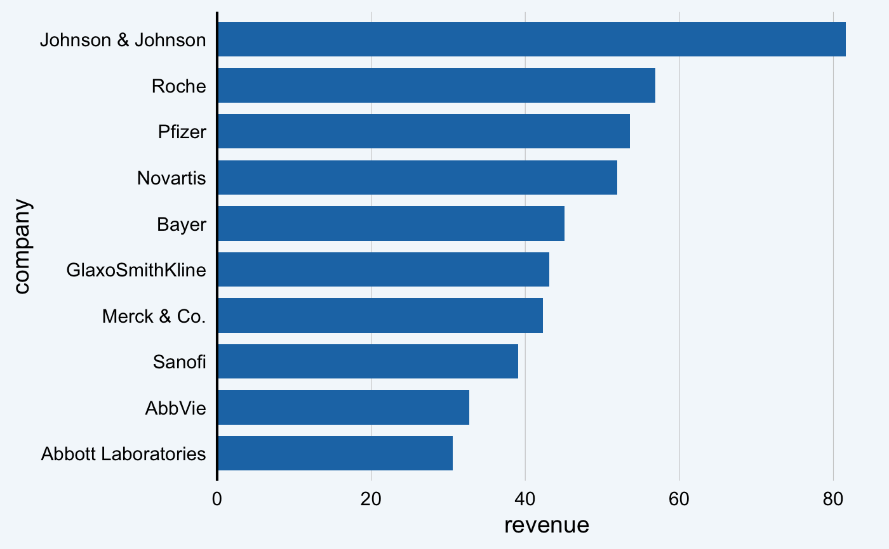
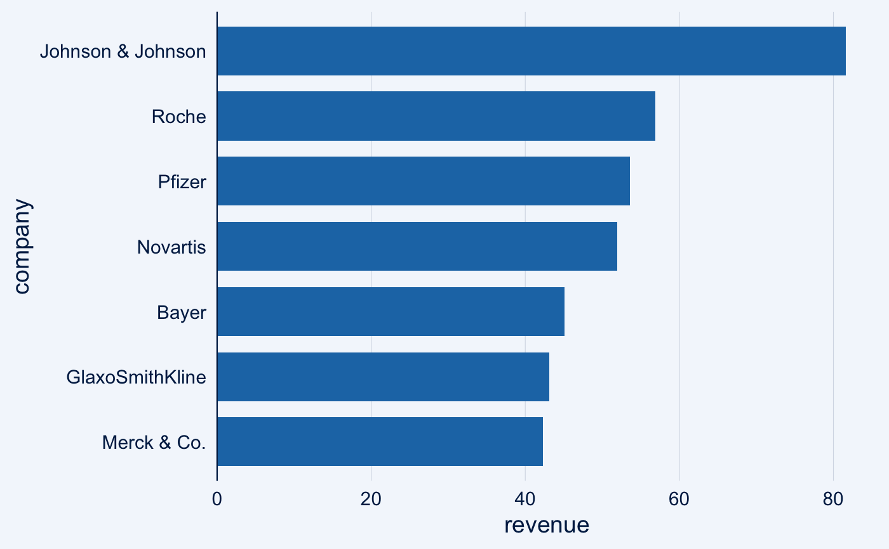
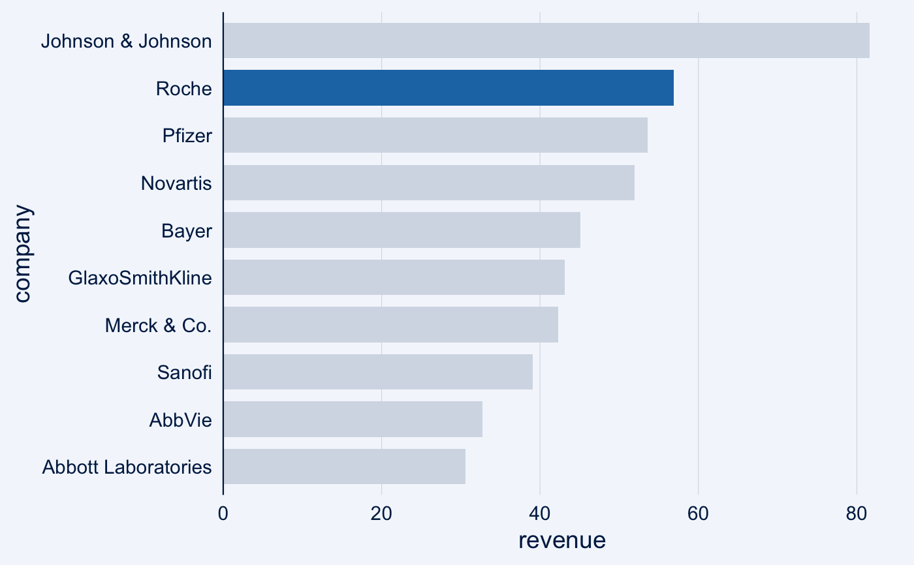
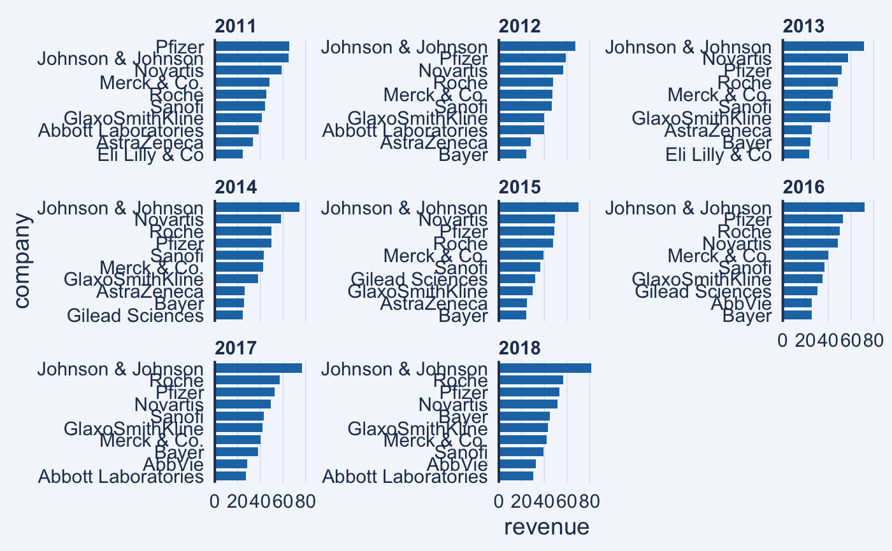

Easily create a bar chart
bar_chart( data, x, y, facet = NULL, ..., bar_color = "#1F77B4", highlight = NULL, sort = TRUE, horizontal = TRUE, limit = NULL, threshold = NULL ) column_chart( data, x, y, facet = NULL, ..., bar_color = "#1F77B4", highlight = NULL, sort = NULL, horizontal = FALSE, limit = NULL, threshold = NULL )
Arguments
| data | Dataset to use for the bar chart |
|---|---|
| x |
|
| y |
|
| facet |
|
| ... | Additional arguments passed to |
| bar_color |
|
| highlight |
|
| sort |
|
| horizontal |
|
| limit |
|
| threshold |
|
Value
An object of class ggplot
Details
Both limit and threshold only work when sort = TRUE.
Attempting to use them when sort = FALSE will result in an error.
Furthermore, only limit or threshold can be used at a time.
Providing a value for both limit and threshold will result in
an error as well.
column_chart() is a shortcut for bar_chart() with
horizontal = FALSE and sort = FALSE if x is
numeric.
Examples
data(biomedicalrevenue) revenue2018 <- biomedicalrevenue[biomedicalrevenue$year == 2018, ] revenue_roche <- biomedicalrevenue[biomedicalrevenue$company == "Roche", ] ## By default bar_chart() creates a horizontal and sorted plot bar_chart(revenue2018, company, revenue)## If the `y` argument is missing the count of each value in `x` is displayed bar_chart(mtcars, cyl)## Create a vertical, non-sorted bar chart bar_chart(revenue_roche, year, revenue, horizontal = FALSE, sort = FALSE)## column_chart() is a shortcut for the above column_chart(revenue_roche, year, revenue)## Limit the number of bars to the top 10 bar_chart(revenue2018, company, revenue, limit = 10)## Display only companies with revenue > 40B. bar_chart(revenue2018, company, revenue, threshold = 40)## Change the bar color bar_chart(revenue2018, company, revenue, bar_color = "purple")## Highlight a single bar bar_chart(revenue2018, company, revenue, limit = 10, highlight = "Roche")## Use facets to show the top 10 companies over the years bar_chart(biomedicalrevenue, company, revenue, facet = year, limit = 10)